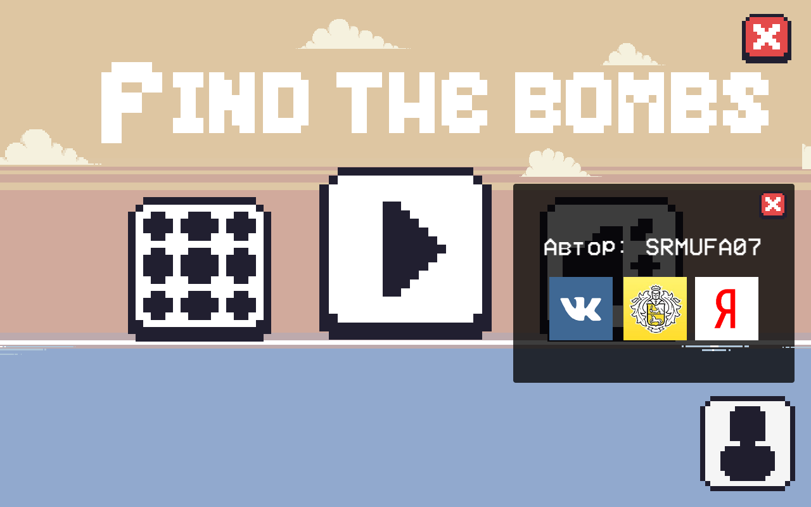

20.07.2022 - На сайт добавлено приложение "Randomizer"(Описание смотрите во вкладке приложения).
4.08.2022 - На сайт добавлена игра "Piano"(Описание читайте во вкладке игры).
13.09.2022 - На сайт добавлена игра "Find the Bombs"(Описание читайте во вкладке игры).
17.09.2022 - Обновление игры (версия 0.2) "Find the Bombs". Улучшено поведение некоторых врагов, также чуть переделан интерфейс.
18.09.2022 - На сайт добавлена моя старая игра "Boxes"(Описание читайте во вкладке игры).
25.09.2022 - На сайт добавлена новая вкладка Главная.
03.10.2022 - Игра "Find the Bombs" теперь доступна на Android! (Игра доступна только с Android 6.0)
06.10.2022 - Обновление игры "Find the Bombs". Переделано управление, чуть изминен дизайн, исправлено несколько багов. (версия 1.3, платформа: Android)